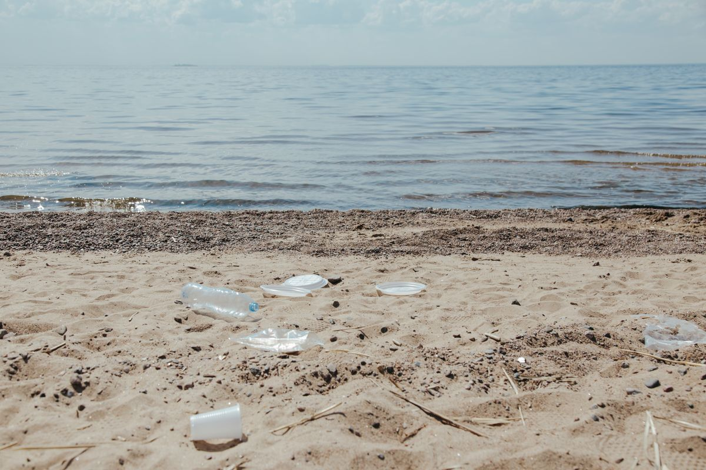

Plastic Pollution
Millions of tons of plastic enter the world's oceans every year. In the Red Sea, plastic bags, bottles, and microplastics can threaten marine life. Sea turtles may mistake floating plastic bags for jellyfish, while fish and other animals can ingest tiny plastic particles that enter marine food webs.
Millions of tons of plastic enter the world's oceans annually, threatening marine ecosystems.